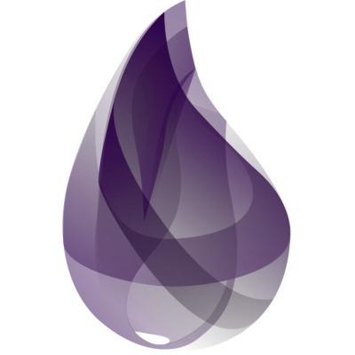

Elixir Programming Language
Andrew Schutt
@schuttandrew
Who am I?
Why learn Elixir?
Why learn Elixir?
Why learn any language?
- Languages don't use a single paradigm
- Different languages solve the same problems in different ways
- New opportunities
Theme from previous languages
- All Object Oriented
- All Imperative languages
Why did I learn Elixir?
- Functional Programming
- Similarity to Ruby
- Phoenix web framework
- Built on Erlang VM
Imperative
a programming paradigm that uses statements that change a program's state.
Declarative
describing what the program must accomplish in terms of the problem domain, rather than describe how to accomplish it
Functional Programming
programming paradigm treats computation as the evaluation of functions
Immutable Values
- Variables are immutable
First Class Functions
- Functions can be...
- variables
- arguments
- return values
- anonymous
Pure Functions
- same input = same output
Recursion
- Recursion
- Recursion
- Recursion
- Recursion
- Recursion!
- Recursion
- Recursion
- Recursion
Elixir
- Erlang
- History
- Tooling (Mix, IEX, ExDoc, Pry)
- Syntax
- Types
- Data Structures
- Pattern Matching
- First Class Functions
- Guard Clauses
- Control Flow
- Pipe Operator

Erlang
- Proven
- Fault Tolerant
- Hot Swap
- OTP

History
- created 2011
- Josè Valim creator
Tools
- IEX
- h method
- ExUnit
- DocTest
- Mix
Syntax
Types
- Integer
- Float
- String
- Bitstring
- Boolean
- Atom
- Tuple
- List
- PID
BitString and String
'string?' == "string?"
false
is_list 'string?
true
String.valid?("string?")
trueAtom
:atom
:true == true
trueTuple
{1, 2, 3, 4}
{1, 2.0, :atom, {"a", "tuple"}, "cool"}List
[1, 2, 3, 4]
[1, 2.0, :atom, {"a", "tuple"}, ["a", ['list']]List
list = [1, 2, 3, 4]
[ head | tail ] = list
head
1
tail
[2, 3, 4]
new_list = ["new head" | list ]
["new head", 1, 2, 3, 4]List
list = [1, 2, 3, 4, 5, 6]
[ 1, 2, third | rest ] = list
third
3
rest
[4, 5, 6]
[ 2, 3, third | rest ] = list
MatchError!Keyword List
keyword_list = [key: "value"]
keyword_list[:key]
"value"Keyword List
[{:key, "value"}] == [key: "value"]
trueEnum
list = [1, 2, 3]
Enum.map(list, fn(x) -> x * 2 end)
[2, 4, 6]
Enum.map(list, &(&1 * 2))Binding
a = 1
b = 2
a = 3
^a = 1
false
^a = 3
true
a
3Binding
value = 100
old_val = fn -> IO.puts "value was #{value}" end
#Function
old_val.()
value was 100
value = 1234
value
1234
old_val.()
value was 100
Dot Notation
value = 100
old_val = fn -> IO.puts "value was #{value}" end
#Function
old_val.()
value was 100
value = 1234
value
1234
old_val.()
value was 100
Pattern Matching
a = 1
[_, 2, 3] = [1, 2, 3]
[_, 2, 3] = [{:value}, 2, 3]
[_first, _second, third] = [1, 2, 3]
_first
[1, 2, 3] = [2, 3, 4]
MatchError!
First Class Functions
add = fn n1, n2 -> n1 + n2 end
subtract = fn n1, n2 -> n1 - n2 end
perform_calc = fn n1, n2, func ->
func.(n1, n2)
end
perform_calc.(5, 6, add)
11Control Flow
if true do
"it's true!"
end
if done do
"all done!"
else
"still doing something"
end
unless orange do
"not orange"
endControl Flow
temp = 30
cond do
temp >= 212 -> "Boiling"
temp <= 32 -> "Freezing"
temp <= -459.67 -> "Absolute Zero"
endCase Statements
calculate = fn expression ->
case expression do
{:+, num1, num2} -> num1 + num2
{:-, num1, num2} -> num1 - num2
{:*, num1, 0} -> 0 #short circuit
{:*, num1, num2} -> num1 * num2
{:/, num1, num2} -> num1 / num2
end
end
calculate.({:+, 1, 2})
3Guard Clauses
{:/, num1, num2} when num2 != 0 -> num1 / num2
grade = "A"
good_job = fn(grade) when grade in ["A"] do
IO.puts "good job"
end
good_job.(grade)
"good job"Pipe Operator
IO.puts "hello"
"hello"
"hello" |> IO.puts
"hello"
Enum.map([1, 2, 3], fn i -> i * 2)
[2, 4, 6]
[1, 2, 3] |> Enum.map(fn i -> * 2)
[2, 4, 6]- find user by token
- fetch user messages
- convert response to JSON
- save messages
Pipe Operator
- find user by token
- fetch user messages
- convert response to JSON
- save messages
def import_messages
Enum.each(
parse_json_to_message_list(
fetch(find_user_by_token(token), "messages/")
), &save_message(&1)
endPipe Operator
- find user by token
- fetch user messages
- convert response to JSON
- save messages
def import_messages
token
|> find_user_by_token
|> fetch("messages/")
|> parse_json_to_message_list
|> Enum.each(&save_message(&1)
endPipe Operator
Module
defmodule CoffeeCup do
def start_drinking(oz) when oz > 0 and oz < 20 do
IO.puts "Cup is full with #{oz} oz"
drink_up(oz)
end
defp drink_up(0), do: get_more
defp drink_up(oz_left) do
IO.puts oz_left
drink_up(oz_left - 1)
end
def get_more do
IO.puts "Get more coffee!"
end
endPhoenix
- MVC
- Similar Project Structure
- Scaffolding
- Channels
- Performance
Phoenix New
Very simple to get a new Phoenix project up and going similar to Rails
Running the above commands generates a simple Twitter clone.
mix phoenix.new example_app
mix ecto.create
mix phoenix.gen.html Comment comments body:string username:string
mix ecto.migrateChannels
Performance
Switch Now!
DO NOT
ACTUALLY
SWITCH
In Conclusion...
Resources:
- Programming Elixir
- Dave Thomas
- Elixir in Action
- Saša Jurić
- Elixir Sips (videocasts)
- Josh Adams
- elixir-lang.org
- phoenixframework.org
- Elixir Fountain (podcast)
- Johnny Winn
- Quick References
Thank you!
@schuttandrew